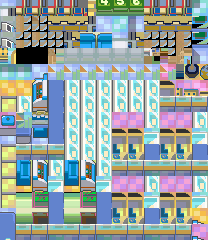
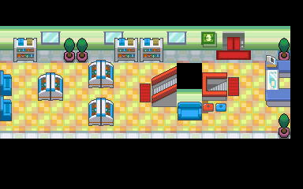
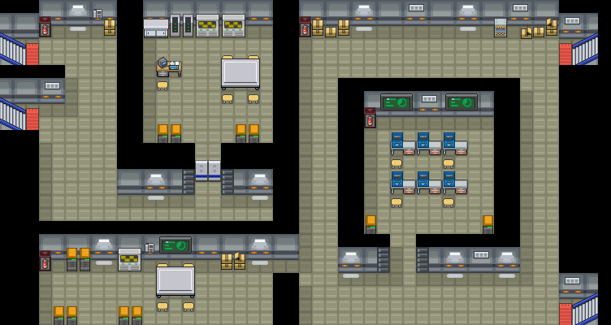

特攻强化
提升战斗中宝可梦 1级特攻的道具。
获取：玉虹市·商店 ／ 满金市·商店 ／ 火箭队基地(4,20) ／ 45号道路(14,59)
用途
提升战斗中宝可梦 1级特攻的道具。 交换后还原。
标价 1000 口袋：道具
获取方式
购买


人物剧情
- 火箭队基地（区域133） · (4,20) · 与坐标处人物交互 · 数量 1 · 地图｜静态图 · 触发条件待补
- 45号道路（区域170） · (14,59) · 与坐标处人物交互 · 数量 1 · 地图｜静态图 · 触发条件待补

数据来源
- 来源文档：out/items.json（
/79） - 表索引 index 0079；内嵌 itemId 79；口袋 ITEMS (id=1)；type 4；hold_effect 0/0；importance 0；unk19 0
- 获取来源文档：encounters_research/out/shops.json、maps_research/out/scripts/scripts.json
- 获取记录 ID：
shop:0816BC72:3:10:4、shop:0816BC72:3:50:15、script_item_candidate:std:087BB086:56:46、script_item_candidate:std:08F3E13A:3:101 - 说明文字解码来源：
reference/SAVE_HOME_GAME_DATA.json.charmap
地点地图
共享RGB底图；点击可缩放定位。数字对应本页相关地点，不代表地图上全部事件。
玉虹市

1 特攻强化（1,7）
满金市

1 特攻强化（22,6）
火箭队基地

1 特攻强化（4,20） 底图有5个图块缺少原始数据。
45号道路


1 特攻强化（14,59）